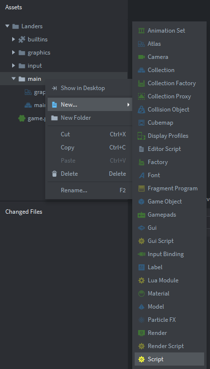
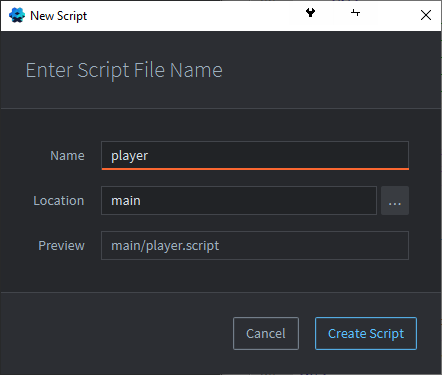
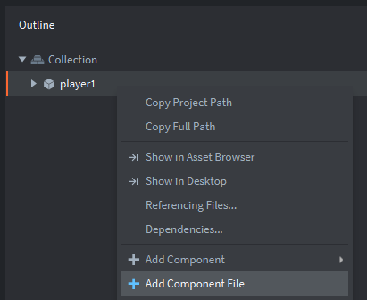

Tutorials for 2D games projects
Landers | Writing the player ship script.
- Inside the 'main' folder, create a new blank script called 'player1' and attach it to the player1 game object.
Step-by-step guide
- In the assets panel, right click the 'main' folder and select, 'New', 'Script'.

- Name the script, 'player' and click, 'Create Script'.

- In the assets panel, double click, 'main.collection'.
- In the outline panel, right click the 'player1' game object and select, 'Add Component File'.

- Select, '/main/player.script' and click 'OK'.
- In the assets panel, right click the 'main' folder and select, 'New', 'Script'.
- In the assets panel, in the 'main' folder, double click the 'player.script' file and add the code to set up the local variables above function init.
-- Speed of the player ship
local speed = 250
-- Input bindings
local move_left = hash("left")
local move_right = hash("right")
local fire = hash("fire")
-- Animation sets
local animation_idle = hash("forward")
local animation_left = hash("bank_left")
local animation_right = hash("bank_right")
--missile
local missile = hash("/missile")Note how we are using comments and additional line breaks to make the code easier to understand and read.
speed is a local variable that will hold the speed that the player ship moves from left to right on the screen.
move_left, move_right and fire are local variables that will hold the result of hashing the strings, "move_left", "move_right" and "fire". These are the actions we set in the input binding key triggers in stage 2a.
In this tutorial instead of using the hashing algorithm every time we need it, instead we are going to run the hashing function once during the object's creation and store the value in a local variable instead. This is called pre-hashing and gives us a small performance boost. It's not necessary, but as you become more experienced in programming you will understand that any unnecessary processing should be eliminated to make your code as efficient as possible.
We apply the same principle to the animation groups we set up in stage 1. Remember that although you set the names of objects using text strings, Defold actually stores them as more ALU efficient integers.
missile will be the missile object we will fire later. Again, pre-hashing so we only use the hashing algorithm once.
- Change the code in the init function to initialise the player ship game object.
function init(self)
msg.post(".", "acquire_input_focus")
self.direction = vmath.vector3()
self.current_animation = nil
self.can_fire = true
endThe input focus is given to the script.
The direction of the player ship is assigned to be a vector3.
current_animation is a local variable that will store which animation is currently playing. This will allow us to continue an animation on the next frame instead of resetting it to the first frame on each key check. It's not important with this tutorial because we only have two frames of animation for each state of the ship. However, if you had many frames of animation it would look odd if you reset the animation if the player was still holding the key down during the next update. Especially if the player was an object that walks!
'nil' is the eqivalent of null in other languages. It is a way of assigning a variable to nothing, not even zero or an empty string. We could use zero instead.
can_fire is an attribute that holds whether the player can fire or not. This will be useful for cool-down effects. We could use an integer to have a variable cool-down, but we'll use a Boolean. The player either can fire or not.
- Change the code in the on_input function to set the direction of the ship based on the player input.
function on_input(self, action_id, action)
-- Set direction based on input
if action_id == move_left then
self.direction.x = -1
elseif action_id == move_right then
self.direction.x = 1
end
endaction_id is a parameter. It will be a value from the action of one of the key triggers that were set in the game.input_binding file in stage 1.
left is the pre-hashed value matching the key trigger 'A'.
If they are both equal then the 'A' key is pressed. The direction attribute of the game object is set to -1.
-1 will be used to move the object in a negative X direction, i.e. left. +1 is used to move the object in a positive X direction, i.e. right. Later we will multiply this by the movement speed.
- Change the update function to move the player ship and animate it.
function update(self, dt)
-- update player position
local pos = go.get_position()
-- prevent the ship leaving the screen
if pos.x < 25 then
pos.x = 25
end
if pos.x > 935 then
pos.x = 935
end
-- set new position
go.set_position(pos + self.direction * speed * dt)
-- animate the ship
local animation = animation_idle
if self.direction.x > 0 then
animation = animation_right
elseif self.direction.x < 0 then
animation = animation_left
end
-- reset animation only if new direction started
if animation ~= self.current_animation then
msg.post("#sprite", "play_animation", { id = animation })
self.current_animation = animation
end
-- only continue to move the ship if the key is held
self.direction.x = 0
endpos is a local variable holding the position of the game object.
First we check if the position of the game object is about to go off the screen, and set it's position if this is the case. The value 25 is calculated as half of the width of the player ship sprite with a few extra pixels to give a small margin. Remember that the position of sprites is measured from their centre in Defold. The value 935 is the width of the game screen (set in the 'game.project' file) minus half the width of the player ship sprite with a small margin.
The new position is set as the current position plus the direction (-1 for left, +1 for right) multipled by the speed and the delta time to ensure a consistent movement speed between different processors.
A local variable called animation is set to be the default animation if no key is pressed. This is animation_idle that we pre-hashed from the animation group name, "forward". We could keep the names of the animation groups and the local variables the same, but we chose to make them different so we could easily differentiate them in explanations of the code.
If the direction variable is greater than 0 then we set the animation to be the pre-hashed animation_right group. We could use 'if self.direction.x == 1' here instead, but using '> 0' gives us flexibility for 8-way diagonal movement in future tutorials so we introduced it here.
If the direction variable is less than 0 then the animation is set to the banking left animation.
We check if the animation needs to be changed. If the player is still holding down the same key then there is no need to change the animation being played. It would look odd if we did.
If the animation needs to be changed because the player is now going in a different direction, or no key is pressed then we send a message to the player 1 sprite to play the new animation, passing the argument of the id property to be the value of the animation variable. Finally we set the current animation variable ready to be checked in the next frame update.
Because we want the player ship to stop moving if no key is pressed we need to reset the direction variable to zero. In games like Pacman where the player keeps moving without having to hold the key down, we could remove the command, 'self.direction.x = 0'. You could do that with this game too if you want to make it harder to play.
- Save the changes by pressing CTRL-S or 'File', 'Save All'.
- Run your game at this point. You should be able to move the ship left and right, and it should show a different sprite when you do.

The next stage is to spawn the invading hoard so we have something to shoot at. We could do the player firing stage next instead if we wanted to. Stage 3a >
 Craig'n'Dave | Version 1.3
Craig'n'Dave | Version 1.3